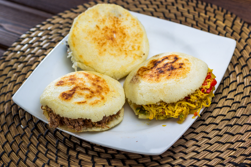

Venezuelan Recipes-Arepas

Description
Arepa is a highly versatile cornbread made from ground corn dough or precooked corn flour. It is commonly consumed in Venezuela, Colombia, Panama, Puerto Rico, and the Dominican Republic. In Venezuela, arepa is eaten at any time of the day, throughout the whole country, and across all socio-economic groups.
Ingredients
- 2 ½ cups lukewarm water
- 1 teaspoon salt
- 2 cups pre-cooked white corn meal (such as P.A.N.®)
- ¼ cup vegetable oil, or as needed
Steps
- Stir water and salt together in a bowl. Gradually stir corn meal into water with your fingers until mixture forms a soft, moist, malleable dough.
- Divide dough into 8 golf ball-size balls and pat each one into a patty about 3/8-inch thick.
- Heat oil in a skillet over medium heat until shimmering. Working in batches, cook corn patties in hot oil until golden brown, 4 to 5 minutes per side. Transfer cooked arepas to a paper towel-lined plate to drain until cool enough to handle.
- Slice halfway through each cake horizontally with a thin serrated knife to form a pita-like pocket.